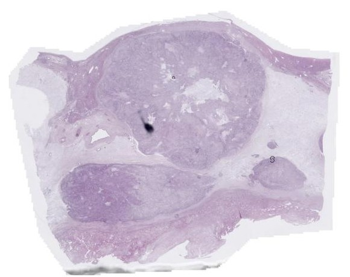
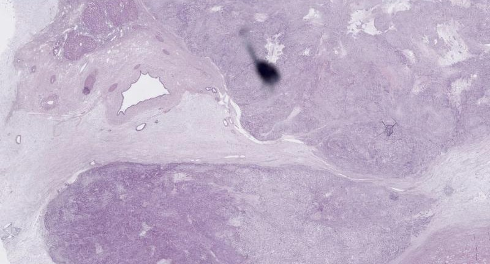
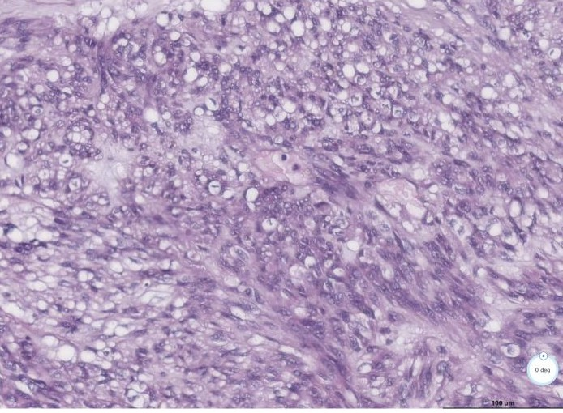
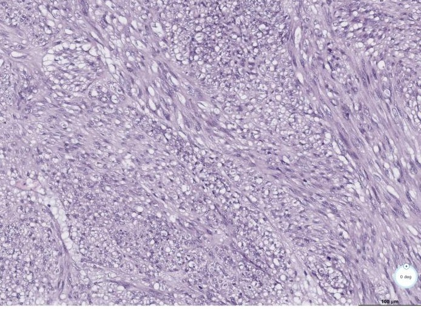
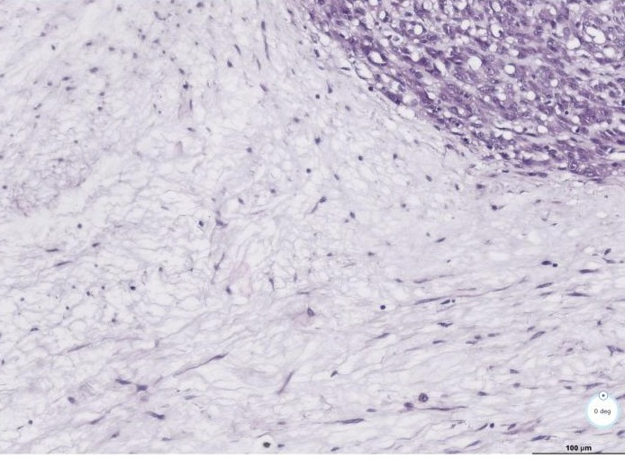

FACT Corrected copy received 05.11.2026[206]: the age is corrected to «1976 р.н.»; the date of receipt of material still reads 22.09.26; the text is otherwise unchanged. See also the discharge summary of 05.11.2026.
Key points
- FACT Liver metastases: GIST, High Grade (mitotic index >5/50 HPF), two adjacent lesions, with foci of preserved tumour growth among wide hyalinosis; treatment effect grade II–III; Ki-67 focally 15 % in one preserved focus.
- FACT The grade changed. The earlier liver trepan biopsy was Low Grade. The pathologists now assign High Grade because this specimen has zones of clearly raised mitotic activity that the trepan material did not contain.
- FACT Gastric primary: treatment effect grade III. Isolated CD117-positive cell groups in hyalinised tissue, up to 1 % of the volume; DOG-1 negative; Ki-67 0 %.
- FACT Margins R0 on liver and stomach. Lymph nodes reactive, ypN0 (0/2). ypT2 ypN0 ypM1(hep), High Grade, R0.
- FACT New second diagnosis: desmoid fibromatosis (ICD-O 8821/1), in three samples: omental fat next to the gastric wall, the separately submitted fat fragment, and the tissue sent for express histology. These foci are reported as desmoid fibromatosis, not as GIST.
- INTERPRETATION R0 applies to what was removed. The left-lobe lesion is still in place, so this is not a statement that no disease remains.
The report (translation)
Referral
FACT Form 014/o, No 4488/26, 21.10.2026. Operation: right hemihepatectomy, cholecystectomy. Material: 1) liver with metastases; 2) gallbladder; 3) gastric neoplasm; 4) local recurrence? Clinical diagnosis: gastric GIST, liver metastases, status after imatinib. 30 pieces, 20 blocks; haematoxylin-eosin, IHC.
Gross description
- Gastric tumour 4.9 × 3.5 × 3 cm with a portion of wall; grey-greenish on section with yellow layers; gastric resection margins stapled. Next to the stomach, lesser-omentum fat with a single induration.
- Separately, a fragment of fatty tissue with peritoneum(?) with an area of induration.
- Gallbladder 6 × 3 cm, cystic duct 2 cm.
- Liver fragment 20 × 18 × 9 cm. Tumour 18 × 16 × 9 cm in the form of a cystic cavity with turbid serous-haemorrhagic contents and yellow film-like deposits along the walls. The wall is mostly grey-greenish tissue resembling the gastric tumour, and on this background there are up to 10 rounded foci of light-pink tissue, 0.5–1.5 cm, resembling viable tumour. In the surrounding liver, next to the first node, an additional focus 6 × 4 × 4 cm of the same structure, with rounded foci of preserved tumour tissue 0.5–1.5 cm.
Blocks
No 1 tumour + gastric margin; 2–5 gastric tumour; 6 lesser-omentum fat next to the gastric wall; 7–8 fat with induration; 9 gallbladder; 10–14 preserved tumour foci in the cyst wall; 15–17 additional liver focus; 18 margin of the main tumour; 19 loose masses in the cyst lumen; 20 liver without tumour; cito 699–700/26 node from the peritoneum, liver focus after express histology.
Immunohistochemistry
| Material (block) | Marker | Result |
|---|---|---|
| Gastric tumour (4488-1) | CD117/c-kit (RM359) | Weak reaction in isolated cell groups (up to 1 %) |
| DOG-1 (DOG1.1) | Negative | |
| Ki-67 (MIB-1) | 0 % | |
| Preserved tumour focus in the liver (4488-14) | Ki-67 (MIB-1) | Focally 15 % |
| Node in omental fat next to the gastric wall (4488-6) | β-catenin (β-catenin-1) | Positive nuclear reaction in fibroblasts |
| Node in the separately submitted fat (4488-7) | β-catenin (β-catenin-1) | Positive nuclear reaction in fibroblasts |
| Express-histology material (cito 699) | β-catenin (β-catenin-1) | Positive nuclear reaction in part of the fibroblasts in one field of view |
| DOG-1 (DOG1.1) | Negative | |
| CD68 (KP-1) | Positive in clusters of macrophages |
Pathological conclusion
- Gastrointestinal stromal tumour (GIST) of the stomach, spindle-cell variant, with treatment effect grade III (isolated groups of CD117-positive cells on a background of hyalinised tissue, up to 1 % of the volume). In the lymph nodes of the adjacent lesser-omentum fragment, reactive hyperplasia (2). In the liver, metastases of gastric GIST, High Grade (mitotic index >5/50 HPF ×400), as two adjacent lesions: one with marked cystic transformation, the other a solid node. In both, foci of preserved tumour growth on a background of wide areas of hypocellular hyalinosis (treatment effect). Treatment effect of the liver tumours grade II–III. Resection margins in liver and stomach without tumour growth (R0). Chronic atrophic cholecystitis; in the lymph node of the gallbladder neck (1), sinus histiocytosis. ypT2 ypN0(0/2) ypM1(hep), High Grade, R0. ICD-O code 8936/3.
- In the fat of the lesser omentum next to the gastric wall, in the separately submitted fat fragment and in the tissue fragment submitted for express histology: foci of growth of desmoid fibromatosis. ICD-O code 8821/1.
Pathologists' comments
- The medical literature contains separate publications on desmoid fibromatosis arising in patients with GIST, both at primary diagnosis and after treatment.
- The preceding trepan biopsy of the liver tumour was graded Low Grade. On this material High Grade is assigned because there are separate zones of clearly raised mitotic activity. These zones were not present in the trepan material.
Slide scan: block 4488-10, H&E
FACT One scan shared by the pathologist on 02.11.2026: file 4488-10_26.svs, H&E (block 10 is listed in the report among the preserved tumour foci in the wall of the cystic tumour). Open the full zoomable scan (laboratory's viewer) · all captures on Google Drive.










Papers cited by the pathologists
| Paper | Type | What it found | Bearing and limits |
|---|---|---|---|
| Dumont et al., Ann Oncol 2012;23:1335–40 Dumont 2012, full text (PMC) · PDF at PMC | Retrospective series, 28 patients, 10 centres | Desmoid after GIST 75 %, concurrent 21 %. Primary gastric in 60 %. SIR 82 (95 % CI 44–133). CTNNB1 exon 3 mutated in about half of those tested. KIT activating mutations not found in the desmoids. No family history of FAP. 5- and 10-year survival 86 % and 64 %. | Main source for the association. The mutation count differs between text (5/10) and table (4/9). Selection bias acknowledged; mostly men, unlike this patient. Several deaths were from GIST, none attributed to desmoid in the table. |
| Dumont et al., J Clin Oncol 2009;27(15 suppl):10568 Dumont 2009, abstract | Conference abstract | Earlier report of the same work. Not read: no copy in the downloaded set. | Superseded by the 2012 paper. |
| Murshid & Al-Maghraby, Case Rep Pathol 2018;1082956 Murshid 2018, publisher · PDF (CC BY) | Case report, 1 patient | Small-bowel GIST 2013, imatinib until 2015; 3 × 2 × 1.5 cm mesenteric mass 2016, clinically taken for recurrence. CD117 and CD34 negative, nuclear β-catenin and SMA positive, Ki-67 <5 %. Surveillance; no recurrence on CT of April 2017. | Shows the IHC panel used to separate the two. Calls β-catenin sensitive but not specific. Includes a five-case comparison table. |
| Wu et al., J Clin Oncol 2024;42(16 suppl):e23516 Wu 2024, abstract | Conference abstract, 24 patients (12 desmoid, 12 GIST), retrospective | FAPI-42 SUVmax 8.8 vs 1.9 (P<0.001). No significant FDG difference. SUV FAPI/FDG ratio 3.3 vs 0.5. FAP expressed in all desmoids examined. | Supports FAPI PET as a promising discriminator, not an established one. The later full paper (PMID 41483308) gives different GIST values and a significant FDG difference. |
| Wang et al., Int Med Case Rep J 2024;17:965–9 Wang 2024, full text (open access) · PDF (CC BY-NC) | Case report, 2 patients | Both high-risk KIT exon 11 GIST on imatinib, new mesenteric mass removed, CD117, CD34 and DOG-1 negative, β-catenin positive. No GIST recurrence reported at follow-up. One had GIST with liver metastases, 6/50 HPF, imatinib 400 mg/day. One lesion had increased FDG uptake. | Closest to this patient, but in those cases the mass was a new isolated lesion. The paper's text is loose in places: it says the first case was "diffuse fibrosis" before calling it desmoid, and its comments on imatinib resistance are speculation. |
Compared with the verbal preliminary result of 27.10.2026
| Item | Verbal, 27.10.2026 | Written, 02.11.2026 |
|---|---|---|
| Abdominal nodule | "Fibrosis, not tumour" | Desmoid fibromatosis, in three samples |
| Viable foci in the liver | Six | Gross: up to 10 in the cyst wall, plus foci in the additional node. Microscopy: preserved foci in both lesions; no total count |
| Stomach | 99.9 % hyalinosis; 0.1 % suspicious area under IHC | Isolated CD117-positive cell groups, up to 1 % of the volume; Ki-67 0 % |
| Grade | Not stated | High Grade (the 05.10.2026 biopsy was Low Grade) |
Items in the document to clarify
- INTERPRETATION Age is written as 56; the date of birth 25.04.1976 gives 50.
- INTERPRETATION Material receipt date is written as 22.09.26, before the operation; 22.10.2026 is presumably meant.
- INTERPRETATION The operation line omits the gastric resection, though the stomach was examined and the certificate of 26.10.2026 lists it. The referral is marked "primary biopsy".
- INTERPRETATION The signature lines are blank in this PDF; a signed and stamped copy is needed for use abroad.
Site reading
OPINION Pathologist, chat, 02.11.2026: two tumour processes, GIST and desmoid fibromatosis growing multicentrically; GIST is the leading problem. How soon the left lesion should be removed is hard to say: the patient must recover and the liver regenerate; to be reviewed with the mutational profile.
GIST
- The primary responded almost completely while the liver holds preserved, mitotically active foci. This fits the resistance pattern already seen in blood (V654A, A829P), but the report does not test it. The genotype of these foci is the awaited result.
- The Low Grade and Ki-67 2 % of the left-lobe biopsy (block 4222/26) came from one trepan track. The authors state that the active zones were absent from their trepan material, so the left-lobe lesion cannot be assumed to be low grade from that sample.
- Questions for the oncologist: whether the High Grade finding changes the systemic plan and the interval to the second stage, and whether any reduction of imatinib dose is reasonable given this result.
- R0 is reported without margin distances; the surgeon said on 28.10.2026 that in places the plane ran almost along the tumour edge.
- Small foci on earlier imaging analysis (S1 about 1.6 mL, P7, P12) are not addressed by this report. Whether S1 was removed should be checked against the operation protocol and the first post-operative imaging.
Desmoid fibromatosis
- The removed peritoneal and omental nodules being desmoid rather than GIST means this specimen gives no histological proof of peritoneal GIST. It does not settle the ascitic cytology (AUS on review), nor lesions that were not removed.
- Desmoid is locally aggressive and does not metastasise (PMID 33788979). GIST and desmoid occur together more often than expected: 28 patients, desmoid after GIST in 75 % (average 30 months, range 6 months to 16 years), concurrent in 21 %; standardised incidence ratio 82 (95 % CI 44–133) from 13 US cases against 0.16 expected (Dumont 2012). The estimate is small and retrospective, and comes from referral centres.
- Confirmation. The nuclear β-catenin evidence is strongest in blocks 6 and 7; in cito 699 it was in one field of view. Published views on the stain differ: with clone β-catenin-1, one series found sensitivity 54 % and specificity 98 % (PMID 33788979), while Murshid 2018 calls β-catenin sensitive but not specific. CTNNB1 sequencing can add support, but a wild-type result would not exclude desmoid: exon 3 was mutated in only about half of the tested desmoids in the GIST series (5 of 10 in the Dumont text; 4 of 9 by its table), against 85 % in the wider desmoid cohort that paper cites. The Shalimov panel lists CTNNB1 and APC among its 50 genes, for hotspot regions only (pathologist, chat, 27.10.2026). Whether a desmoid block has enough lesional cells for its 5 % reporting threshold is a question for the pathologist. The published cases used a wider panel (CD117, CD34, SMA, DOG-1, β-catenin); this report gives only β-catenin on blocks 6 and 7. A review by a sarcoma pathologist is reasonable because the finding changes how future lesions are read.
- Hereditary question. Desmoid can be associated with familial adenomatous polyposis (APC), so it needs checking. The 2023 germline panel does not answer this: it reports only BRCA1, BRCA2, CHEK2 and PALB2. The colonoscopy of 02.10.2026 records "single (3)" colon neoplasias, histology not stated; that histology should be obtained. In the Dumont series no patient had a family history of FAP, and no germline syndrome linking GIST and desmoid has been shown. A wild-type CTNNB1 result on its own would therefore not point to FAP.
- Imaging. New nodules near the operative field after GIST surgery can be desmoid rather than recurrence: 8 patients, median 1.8 years after surgery, with mild or no FDG uptake (PMID 31086468); three of the 28 Dumont patients had desmoid at the incision site, mimicking recurrence. FDG does not separate them reliably. In 24 patients the full paper reports median SUVmax 2.5 in intra-abdominal desmoid against 6.1 in recurrent GIST (PMID 41483308), but the Wu 2024 abstract, with the same patient numbers and apparently from the same programme, found no significant FDG difference; both found higher FAPI uptake in desmoid. One Wang 2024 patient had increased FDG uptake in a lesion that proved to be desmoid. So any new isolated peritoneal or mesenteric nodule should be biopsied, with β-catenin, before being called GIST progression, whatever its FDG uptake. The first post-operative PET-CT should be read with this in mind, and the earlier ametabolic peritoneal node of 13.05.2025 could be reconsidered. Whether FAPI PET is available locally is a question for the radiologist.
- Management. Global consensus has moved from surgery first to less invasive management, including surveillance (PMID 32004793, PMID 38900421). Desmoid can recur even after complete resection (PMID 23955477), and surgical trauma is a recognised risk factor (Dumont 2012; Murshid 2018). This is worth raising with the surgeon before a second abdominal operation; it is for the team to weigh, since the second stage targets GIST.
- Systemic overlap. If treatment of desmoid were ever needed: sorafenib 2-year PFS 81 % vs 36 % on placebo (PMID 30575484); nirogacestat PFS HR 0.29 (PMID 36884323); imatinib 800 mg, 6-month progression arrest 65 % (PMID 28282612). These are desmoid data, not GIST data. Nodules arose in this patient during imatinib 400 mg, though the report does not date them. One Dumont patient developed desmoid on imatinib 400 mg/day and had a partial response of both GIST and desmoid at 800 mg/day: a single case, reported as a CT finding, and not evidence for this patient. Wang 2024 speculates that desmoid might signal either emerging resistance or continued imatinib effect; it offers no data for either.
Questions for the pathologist
- Exact mitotic count per 5 mm², and which blocks hold the High Grade zones.
- CD117 and DOG-1 on the preserved liver foci (only Ki-67 is reported for block 14).
- Margin distance at the main tumour (block 18), and whether the desmoid foci reached a margin.
- Which three fragments are going to genetics (the pathologist confirmed three on 02.11.2026), and is block 4222/26 of the left lobe one of them?
- Can a desmoid block be tested for CTNNB1 on the same panel?
- CD117, CD34 and SMA on the desmoid blocks 6 and 7, if not already done.
- Result for cito 700 (the liver focus after express histology), which is listed among the blocks but has no separate line.
- Corrected age and receipt date, with a signed copy.